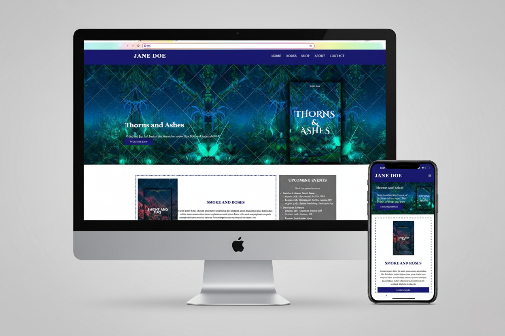
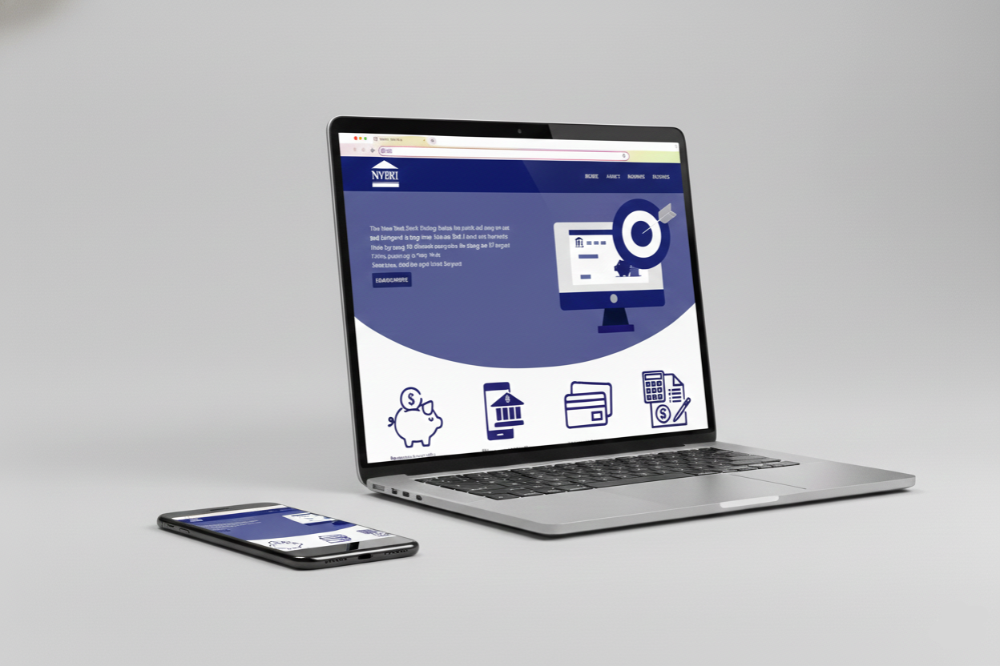
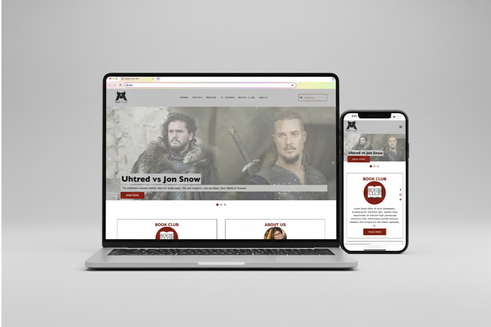
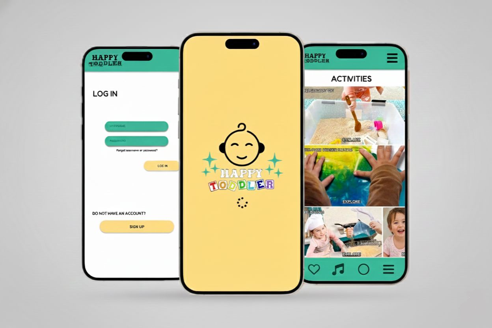
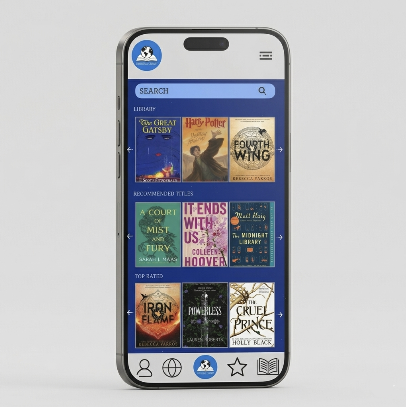
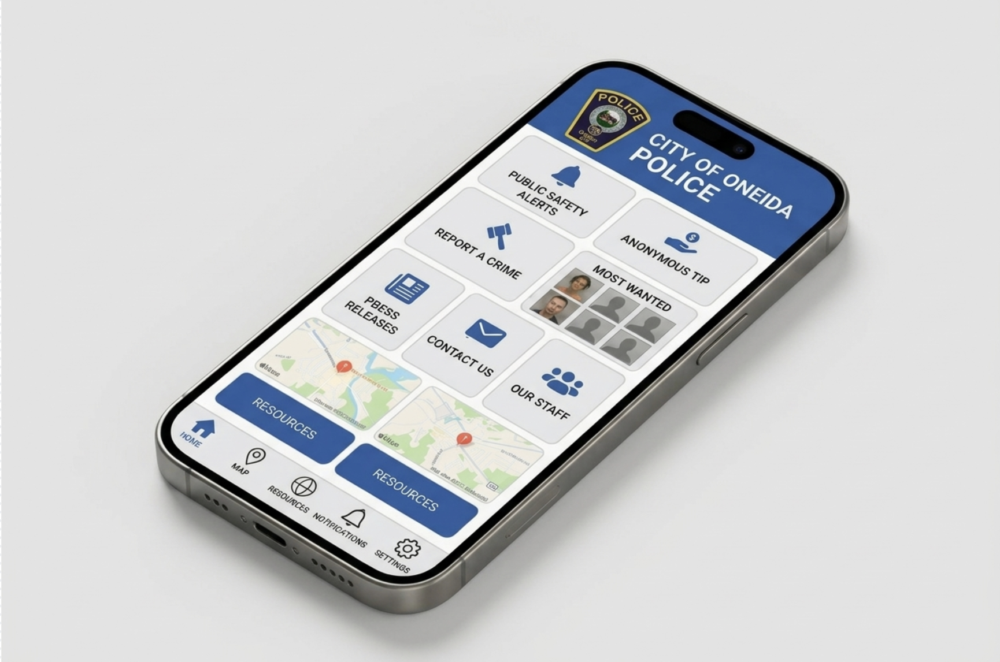

Jane Doe Author
User-centered website for author Jane Doe. Enables intuitive navigation, facilitating reader feedback, while providing a structured system for showcasing, promoting, and selling her books.
UX/UI • Graphic Design • Web Development
My name is Isadora, but most people call me Isa. I am a UX Designer & Web Developer with a background in Graphic Design and Filmmaking. My goal is to create problem-solving and engaging User Experience solutions.

User-centered website for author Jane Doe. Enables intuitive navigation, facilitating reader feedback, while providing a structured system for showcasing, promoting, and selling her books.
UX/UI • Graphic Design • Web Development

Government-based website that assists people to find which bank is best for their needs using a rating system.
UX/UI • Graphic Design • Web Development

Blog that delivers reviews and recommendations for TV shows, books, and movies.
UX/UI • Graphic Design • Web Development

Mobile App that targets parents and caregivers who assist with organization, tasks, activities, and meal planning for kids.
UX/UI • Graphic Design • Development

A mobile app that allows readers from all over the world to lend books without cost, working as a mobile library.
UX/UI • Graphic Design • Development

Evaluation of a mobile application that had little to no reach by utilizing UX Research as a strategy to improve the analytics.
UX/UI Research